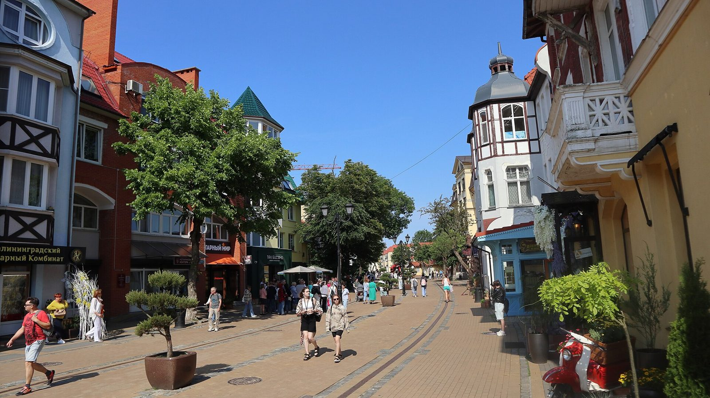
Иди
Включите «Рядом со мной» и просто гуляйте. Карта покажет, что вокруг и сколько до ближайшей точки.
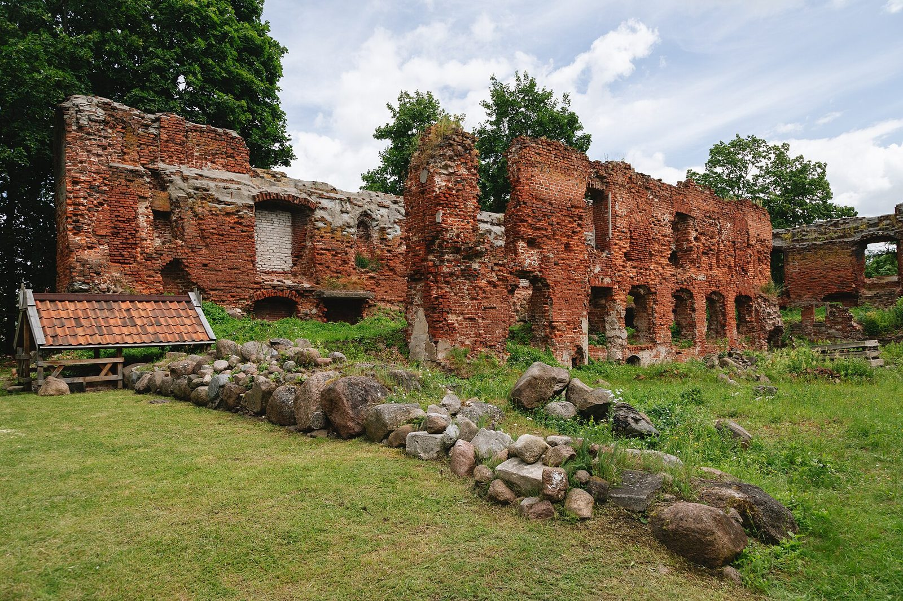
Подойдите к замку, кирхе или маяку — и рассказ начнётся сам.

Включите «Рядом со мной» и просто гуляйте. Карта покажет, что вокруг и сколько до ближайшей точки.
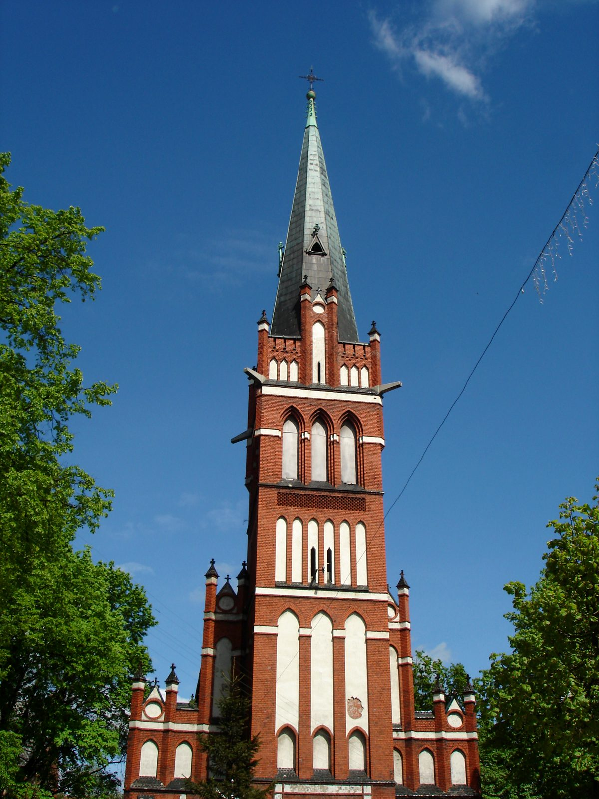
За 150 метров до места рассказ запускается сам. Две-три минуты у каждой точки: кто строил, что здесь случилось и на что смотреть.
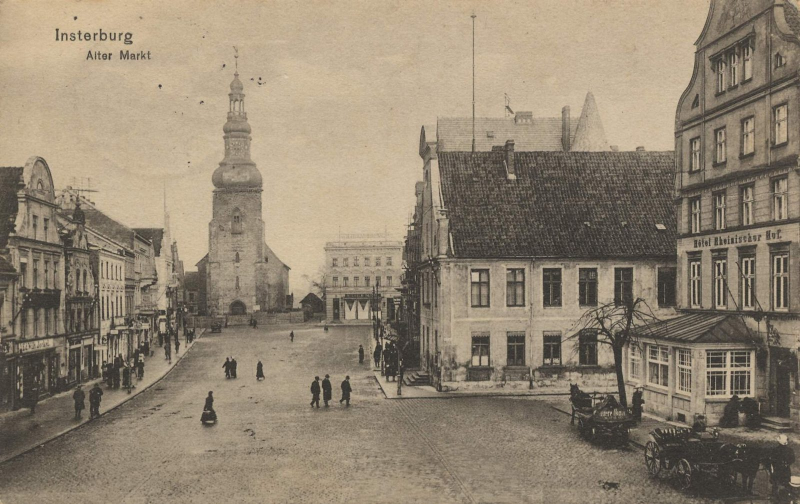
«Машина времени» кладёт довоенную открытку поверх камеры. Тот же перекрёсток, только сто лет назад.
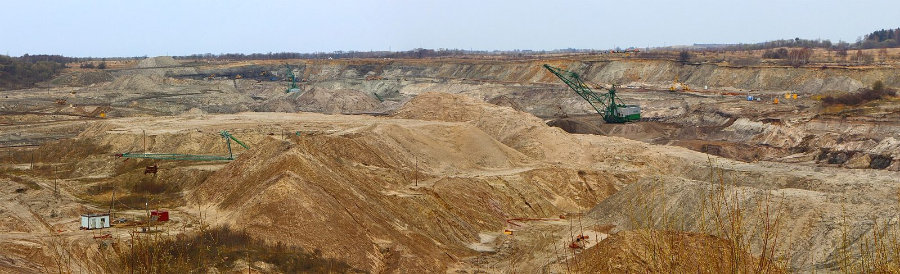
Пять баллов за дослушанную историю, двадцать — за отметку на месте. Баллы копятся на скидки у партнёров.
Потяните границу: слева довоенная открытка, справа сегодняшний снимок. В гиде то же самое работает через камеру телефона, прямо на улице.
Послушать это место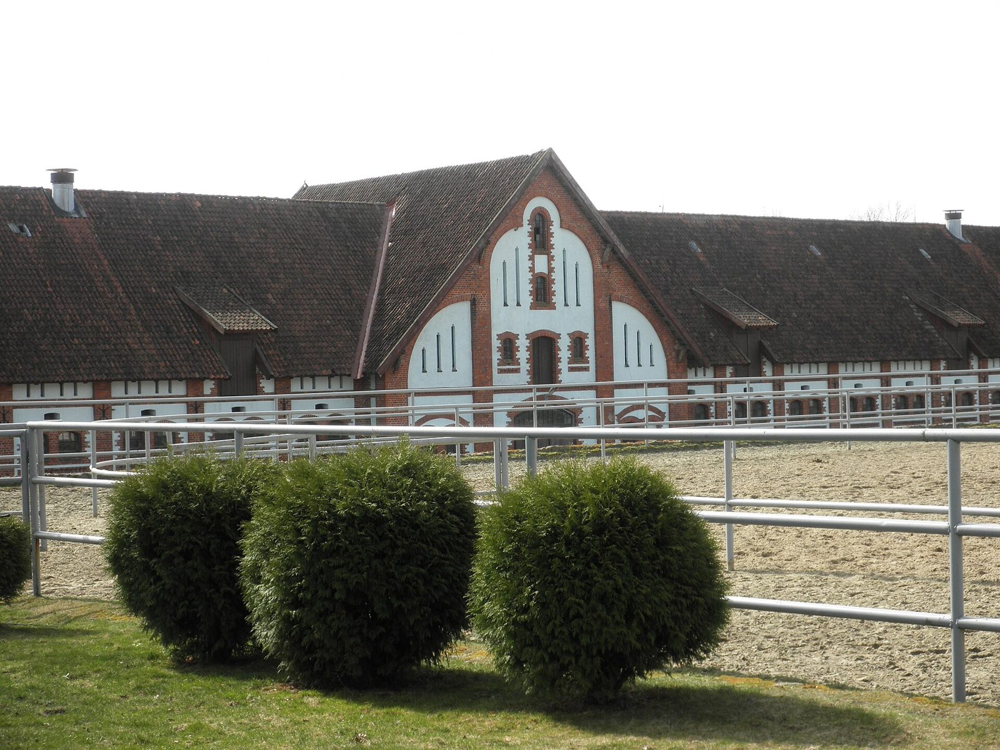
Бывший Инстербург: два орденских замка, конный завод, дома Ганса Шаруна. В 2027 году город станет столицей «Серебряного ожерелья».
Восемь экскурсий на выбор. Каждая начинается со вступления гида и ведёт от точки к точке по карте. Любую можно изменить под себя или собрать свой маршрут из одной или нескольких остановок: гид посчитает дорогу, время и подскажет, как добраться.
Собрать свой маршрутНе нужно искать кнопку или наводить камеру на табличку. Гид следит за геолокацией и начинает рассказ, когда вы рядом.
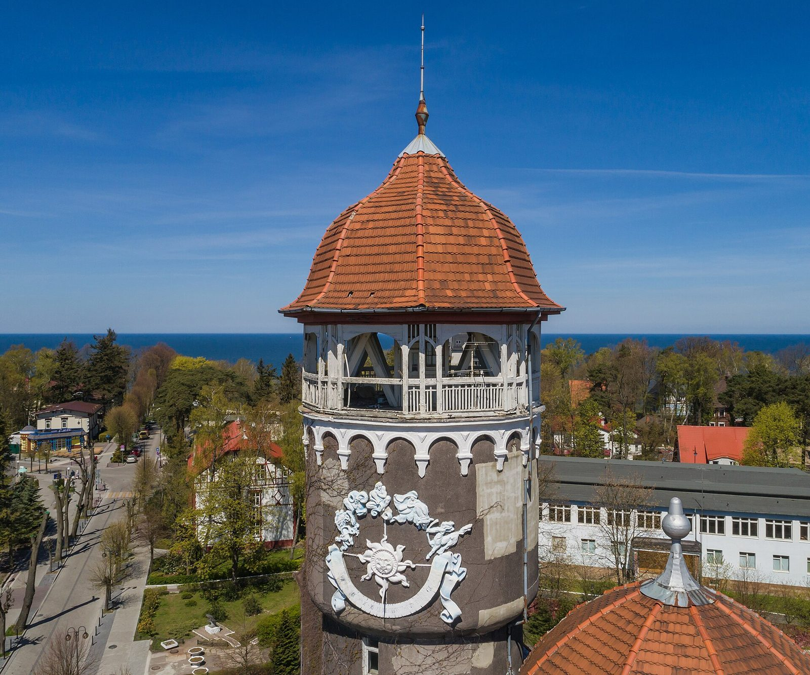
У толстых крепостных стен спутники теряются. На этот случай у каждой точки есть QR-код: навели телефон — история и баллы ваши.
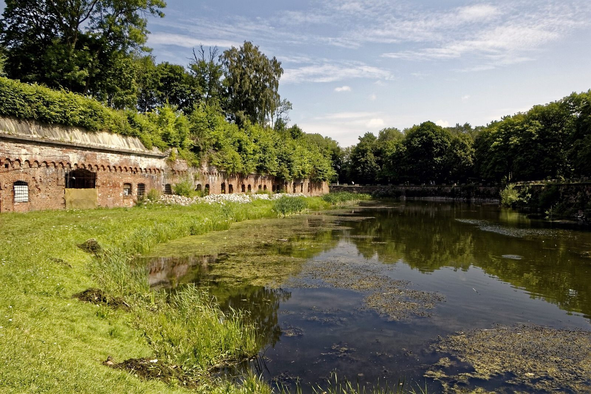
Каждая история и каждая отметка на месте приносят баллы. Их можно будет менять на скидки в кафе и музеях-партнёрах.
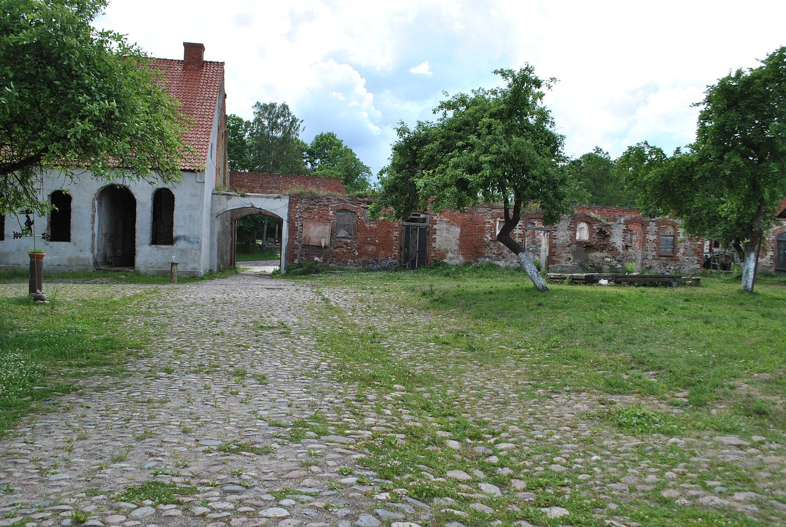
Все истории записаны на русском и английском. Язык переключается одной кнопкой, прогресс и баллы остаются.
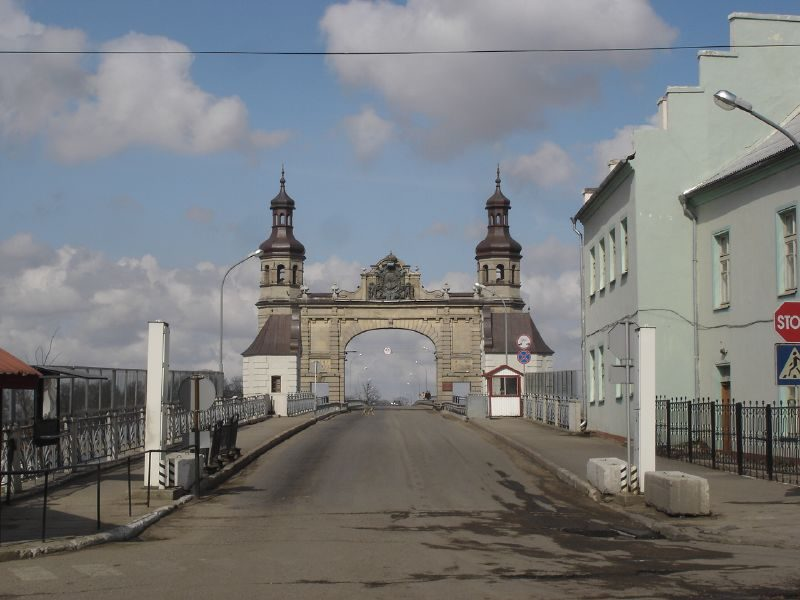
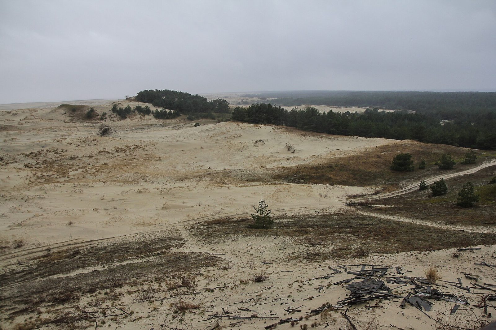
Гид открывается в браузере телефона. Ничего не нужно скачивать: откройте карту и идите к ближайшей точке.
Открыть гид